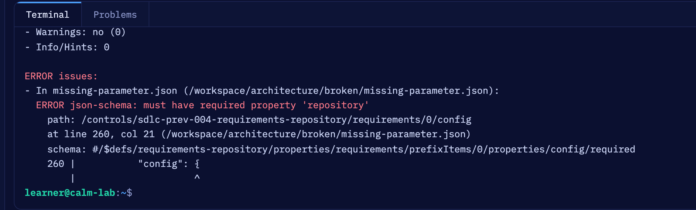

Driving agentic development with FINOS CALM Matthew Bain and Aaron Searle OSFF New York, 4 November 2026
Built on
The risk event
An AI coding agent can write code that passes every test and still breaks your architecture.
Tests pass. Types pass. A tired reviewer approves. In a regulated institution that is not a bug. It is a risk event.
We have been here before
Every bank is writing its own agent guardrails right now, the way every bank once wrote its own SDLC controls.
Duplicated effort, then drift, and no shared language to compare them, audit them or contribute them back. The industry fixed that once, in the open.
The SDLC Common Controls Catalog
FINOS wrote the SDLC controls once, in the open: a shared reference library of software governance controls for regulated delivery, built by a working group.
11 risks: the outcomes the catalog exists to reduce
22 mitigations: each names the risks it addresses and the lifecycle phase it applies to
Every entry maps to NIST SP 800-53r5 and, where relevant, EU DORA, NIST SSDF, SLSA and others
The catalog at a glance
Risks
SDLC-OP-007Configuration Drift
SDLC-SEC-003Credential and Secret Exposure
SDLC-SEC-004Vulnerable Software in Production
SDLC-SEC-006Unauthorised System Access
SDLC-SEC-008Unauthorised Change
SDLC-SEC-009Environment Breach
SDLC-SEC-010Dependency and Transitive Supply Chain Compromise
SDLC-SEC-011Build Toolchain and Service Supply Chain Compromise
SDLC-RC-001Insider Threat
SDLC-RC-005Audit and Compliance Evidence Failure
SDLC-BUS-012Business Reputation Risk from Non-Approved Software Version Releases
Mitigations
SDLC-PREV-001Code Review
SDLC-PREV-002Content Addressable Identities
SDLC-PREV-003Software Artifact Provenance
SDLC-PREV-004Requirements Repository
SDLC-PREV-005Vulnerability Scanning: SAST
SDLC-PREV-006Vulnerability Scanning: DAST
SDLC-PREV-007Vulnerability Scanning: Dependencies
SDLC-PREV-008Version Control
SDLC-PREV-009Component Inventory
SDLC-PREV-010Secret Detection
SDLC-PREV-011Vulnerability Remediation SLAs
SDLC-PREV-012Deployment Gating
SDLC-PREV-013System Inventory
SDLC-PREV-014Test Evidence Retention
SDLC-PREV-015Testing Requirements
SDLC-PREV-016Test Execution and Sign-Off
SDLC-PREV-017Service Dependency Control
SDLC-PREV-018Dependency Curation
SDLC-PREV-019Version Release Approval Gating
SDLC-PREV-020Requirements Approval for Release
SDLC-PREV-021Infrastructure Dependencies
SDLC-PREV-022Data Retention and Disposal
The seven this talk enforces
Of the 22, we picked seven, and every check you see today names one of them.
Id
Control
SDLC-PREV-001
Code Review
SDLC-PREV-004
Requirements Repository
SDLC-PREV-012
Deployment Gating
SDLC-PREV-013
System Inventory
SDLC-PREV-014
Test Evidence Retention
SDLC-PREV-016
Test Execution and Sign-Off
SDLC-PREV-017
Service Dependency Control
The three risks in view
SDLC-OP-007 Configuration Drift
SDLC-SEC-008 Unauthorised Change
SDLC-RC-005 Audit and Compliance Evidence Failure
The missing piece
FINOS CALM: your architecture as data a machine can check
Not a diagram, a file. Nodes (the systems, services, stores and people), relationships (who talks to whom), interfaces (how), and controls (the rules, attached to the parts they govern).
Validated by a command-line tool against a schema, so a bad model fails a build the way bad code does.
Readable by a pipeline and by an agent, so the same file is the context the agent works from and the control the pipeline enforces.
Three FINOS projects, one operating model
governs the system
The model: nodes, relationships, interfaces and the controls attached to them.
governs the change
22 controls on how software is built, reviewed, released and evidenced.
governs the agent
Mitigations on the AI itself, already published as a controls domain on CALM Hub.
They compose because the catalog's controls are attached to CALM nodes as data, and the agent is pointed at that model.
The loop
Five stations, one question each, and we walk round once with one system and one rule.
Model. What are the rules? The system in CALM, the catalog's controls attached as data.
Spec. What are we building, and where? A requirement pinned to CALM nodes.
Agent. Build it inside the rules. It reads the model before it writes.
Gate. Did it stay inside? Deterministic checks against the model, which also picks the reviewer.
Evidence. Prove it. One hashed bundle per change, keyed by control id.
Station 1 of 5. Lab 1, or the Learning Lab
Model: what are the rules?
One small system, and the one rule it must not break.
Meet the system
Trade API (tier 2, internal) asks Position Service (tier 1, confidential) for positions. It never reads the position store itself.
Which control. SDLC-PREV-017 Service Dependency Control, from the catalog.
Where it is defined. The catalog's own control requirement document on CALM Hub. The CLI validates this config against it: a wrong id or a missing field is a build failure.
The rule.allowed-sources: only Position Service may connect. The drift gate compares this list with the code.
A control in a catalog is prose. A control on a CALM node is data with a schema, an owner and an enforcement point.
How the catalog becomes enforceable
Standards say what a node, an interface or a control requirement looks like. The pattern says which of them every architecture here must satisfy. FINOS publishes the controls once; each organisation publishes how it enforces them.
A pattern says what every model here must carry
The governed-service pattern requires the four system-level controls, pins each to its catalog document, fixes the parameters the gates read, and applies the governed-node Standard to every node. Remove one parameter and validate, in the browser:

lab.calm.finos.org/?lesson=agentic-sdlc-model.Standards do not enforce themselves. A pattern does.
Station 2 of 5. Lab 2, or the Learning Lab
Spec: what are we building, and which parts of the model may it touch?
A requirement that names its scope in the model.
A spec names the parts of the model it may touch
A spec is a requirement kept in the repository (SDLC-PREV-004). Its front matter names the nodes and relationships the work may use:
"Positions are already on disk next to us: read them directly and save a network hop."
The agent's own comment. Green tests, clean types. A reviewer skimming the diff on a Friday afternoon approves it.
Attempt A at the gate live
Six checks run on every change; two failed, and both name the rule, the file and the line.
Attempt B: the same spec, with the model
Given the model, the same agent took the modelled path, and every gate passed.
We also ran a real coding agent twice on the same prompt, with and without the model access. Neither drifted; the model shortened the path. Numbers in the appendix.
Station 4 of 5. Lab 4, or the Learning Lab
Gate: did it stay inside, and who reviews the robot?
Six checks on every change, and a review mode the model decides.
Every change meets six gates
Gate
What it checks
Control
calm-validate
the model is valid against CALM, the pattern and the Standards it names
SDLC-PREV-012
spec-check
the change names an approved spec and touches only the nodes it declares
SDLC-PREV-004
drift-check
every connection in the code is in the model, and allowed
SDLC-PREV-017, 012
model-diff
any change to the model was declared by the spec
SDLC-PREV-004, 017
tests
the test suite passes
SDLC-PREV-016, 014
review-router
the model decides who must review
SDLC-PREV-001
All six must pass: SDLC-PREV-012 Deployment Gating, and the list itself lives in the model. The model, the gates and the agent instructions are the control plane: a change there always goes to a human.
The policy lives in the model
Who reviews is decided by the tier and data of what the change touches, and that rule lives in the model.
A change that touches
Review
the control plane
human
a tier 1 or confidential node
human
a tier 2+ node, specs or tests
cognitive: an approved AI reviewer, never the author
documentation only
automated
Then one comment in the tier 1 service:
Attempt C: the agent edits the model live
The agent tries to make the gate pass by editing the model; two different checks catch it, and review goes to a human.
The right path: a declared model change
1. When a spec genuinely needs a new connection, a human changes the model first. SPEC-002 declares the change, and the gates admit exactly that:
2. Then the agent builds inside the new scope:
Station 5 of 5. Lab 5
Evidence: prove it
One file per change that an examiner can read.
One bundle per change live
For one commit, one file says what was built, against which architecture, which checks passed, and who wrote it. Bound to the commit, the spec and the exact architecture, then hashed. Beside it, one CALM evidence document per control configuration.
In CI, every step names its control
The same checks run on every pull request, and each step names the catalog control it satisfies.
What fell out of building this, and where it goes.
Three candidate controls for the catalog
Three controls we needed and could not find in the catalog; each already has a working check in the repository.
Candidate
Intent
Architecture Conformance
Code admitted to a protected baseline must not introduce connections absent from the approved, machine-readable architecture
Agent Task Scoping
An agent's change is bound to an approved requirement that declares its architectural scope in advance
Agent Attribution and Context Provenance
Show which agent identity produced a change, under which instructions, with which architectural context
Drafts to start a conversation, not catalog content.
Where to contribute
Three doors: controls to the catalog, modelling to CALM, agent mitigations to the AI Governance Framework.
Controls for the agentic SDLC: the three candidates, or better ones. And a conversation about which enforcement parameters belong in the catalog's own documents.
The catalog's Standard and documents, the pattern and the node Standards on CALM Hub, two Learning Lab lessons. Modelling gaps and richer conformance signals next.
The architecture and pattern are published with the site, with docs generated from the model; the catalog's documents, their Standard and the pattern live on CALM Hub.
Thank you
The model is the context, and the same model is the control.
Matthew Bain and Aaron Searle
Appendix
Two real agents, one prompt: "Implement SPEC-001."
unassisted
assisted
Agent instructions and model access
removed
present
Result
conformant
conformant
Read the model first
opened the JSON
MCP context tool
Wall clock
748 s
279 s
Neither drifted. The unassisted agent found and read the gates on its own. The context changed the path, not the destination. One sample each, transcripts in docs/live-runs.


The three risks in view